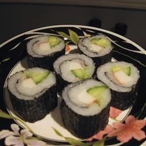

SUSHI RICE RECIPE

DESCROPTION
Sushi rice is a Japanese cuisine made from fermented
rice and salt fish. Sushi rice differs in that it's not
just plain steamed rice. ... Salt, rice vinegar and sugar
are the core of what makes sushi rice different than the
regular rice we eat daily.
While Japan is certainly the sushi capital of
the world – and responsible for introducing
the dish to travelers – sushi traces its origins
back to a Chinese dish called narezushi. This dish
consisted of fermented rice and salted fish.
INGREDIENTS
- Japanese sushi-style rice
- Water
- White sugar
- Konbu dried kelp(Optional)
- rice vinegar
- Salt
STEPS
- Place rice into a large,
deep bowl. Fill with cold
water and rub rice together
with hands until the water
turns milky white. Pour off
the cloudy water, being careful
not to pour out the rice. Repeat
3 or 4 times until you can see the
rice through 3 inches of water.
- Drain the rice in a fine strainer, then
place into a saucepan along with konbu and
3 cups water. Allow to stand for 30 minutes.
Stir together rice vinegar, sugar, and salt
until dissolved in a small bowl, set aside.
- Cover, and bring rice to a boil over high heat,
then reduce heat to low, and simmer for 15
minutes. Remove from heat and allow to stand,
covered, for 5 minutes.
- Scrape rice into a bowl; remove and discard the
konbu. Stir in vinegar mixture until well
incorporated and no lumps of rice remain.
Allow to cool at room temperature. For a
shinier appearance, use an electric fan to
cool the rice rapidly.
NUTRITIONAL FACTS
Per Serving:
161 calories; protein 1.6g; carbohydrates 37.8g; fat 0.4g; sodium 1.2mg. Full Nutrition